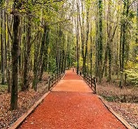
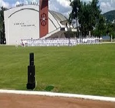

Sports Page
Exercise is necessary to relax yourself mentally.In adition
it makes you more healthy. And if you are in a naval academy
you must at least join two spors teams,children learn vital skills
when they play sport.So students must attend teams weely schedules.
Sea sports
Our school is a NAVAL ACADEMY, and it located in Heybeliada so we have every opportunity
to perfrom sea sports. And we are very good at it. For instance we have sailing team, cano team and Row
team.In sea sports we encourage the students to participate in various kind
of sea races. And as a side in order to perform sailing,row, cano you do not
need to be in the team.
Sailing
Sailing team is the most crowded team in this school.There are
different types of ships.The first type is optimis. This boat is
for the fisrt year students.The second type is laser, the second And
third year students can sail with this boats.The last one is stratos
this boat has 5 to 6 people capacity.

Row
Our row team offers students to improve theirselves
in different ways. First you can participate in races
individually in single boats.However if you are team guy
you can use not single, multi person boats and race with
your teammembers. This is a rare experience which helps
students to gain more confidence.

Cano
Cano sport is among one of the most difficults sea sports
in our school.I bet at fist you can not stand still even 5 seconds :).
Our school has more than 10 cano boats, but this is not so much because
the canos are just allows single person.
Swimming
Swimming is one of the most important and essential
sports for a sailor. -In swimming team students can gain
lots of race experiences, because in a semester you can
attend at least 10 races, and lots of swimming camps.

Water Polo
Water polo is actually like a side team of the
swimming team. Because the players have to swim
very well in order to finish the time period :)
The trainings are very long and exhausting if you
want to attend this team you should know no pain no gain

Traking
As you know Heybeliada is has lots of forest, so you can walk in
the forest and enjoying the view with your teammembers. this
sports helps you be in shape and relaxing your mind.This team has
some collective events that whole scholl can attend.

Ball Sports
The school has two turf and two astroturf.By the help of
these materials everyone can play this sport.In school
there are plenty of tournaments each class team can attentd
and they also can attend some tournaments with other schools.
This sport can help students to meet other students, so they can
be more social.

Olympic Sports
As you all know
this Olympic sports has many side branches, such as
shot put,long jump, sprint etc. So each student can
attend one of these branches according to their abiltiy.